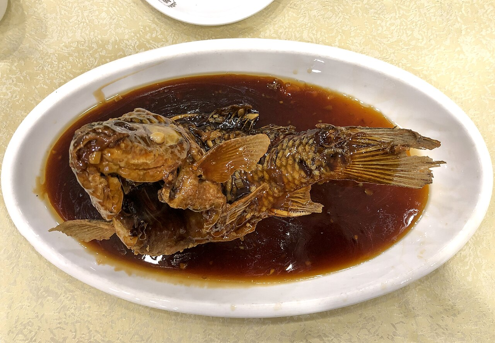
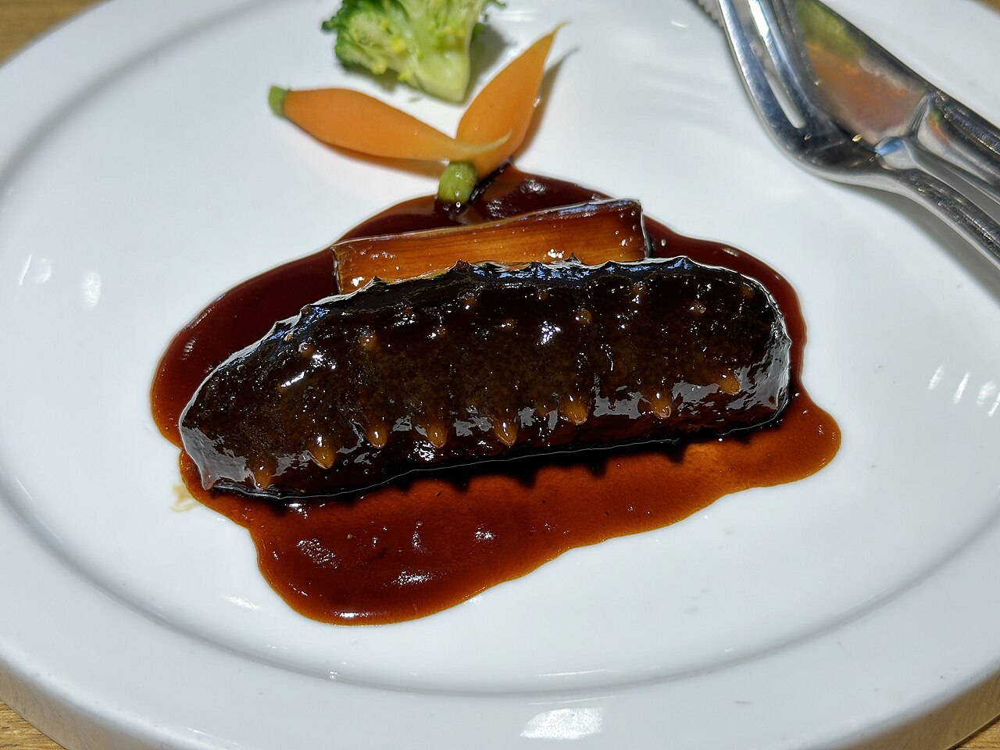
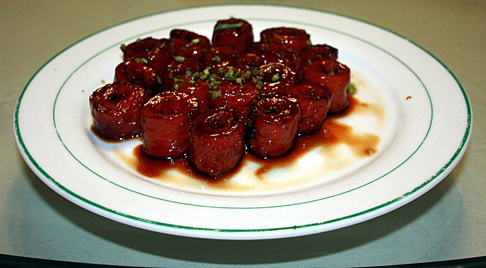
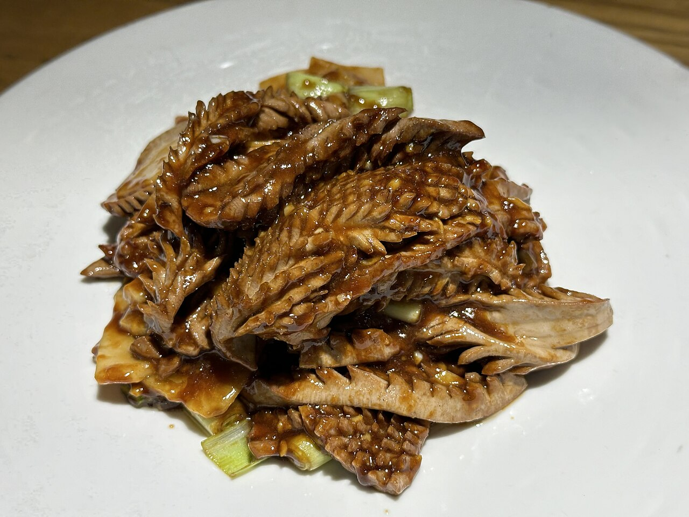

糖醋鲤鱼Sweet & Sour Carp
济南名菜:黄河鲤鱼改牡丹花刀、挂糊油炸至昂首翘尾,浇上琥珀色糖醋汁, 外酥里嫩、酸甜适口,造型如"鲤鱼跃龙门",是宴席上的头面菜。

鲁菜发端于山东,是历史最悠久、影响最深广的菜系之一,明清宫廷菜多出其源。 它口味以咸鲜为主,崇尚火候与清汤奶汤之功,擅爆、炒、烧、扒; 葱烧、糖醋、酱香等味型构筑了北方菜的底色,也塑造了"吃鲁菜见功底"的口碑。

济南名菜:黄河鲤鱼改牡丹花刀、挂糊油炸至昂首翘尾,浇上琥珀色糖醋汁, 外酥里嫩、酸甜适口,造型如"鲤鱼跃龙门",是宴席上的头面菜。

鲁菜葱香技法的巅峰:以章丘大葱炸制的葱油与海参同烧,海参软糯弹滑, 葱香浓郁、汁浓芡亮,是"海参是海味之首、葱是鲁菜之魂"的最佳注脚。

济南名菜:猪大肠经焯、煮、炸、烧反复治净入味,成菜色泽红润、层层相套, 酸、甜、香、辣、咸五味俱全,被食客比作道家"九转金丹"般精工细作。

最考刀工火候的济南名菜:腰花剞麦穗花刀,旺火烈油数秒爆成, 脆嫩无腥、花纹舒展,是鲁菜"爆"字功的活招牌。

胶东宴席名菜:大虾煎出虾油再小火焖透,虾红油亮、壳酥肉嫩, 咸甜适口,连虾脑都是拌饭精华。